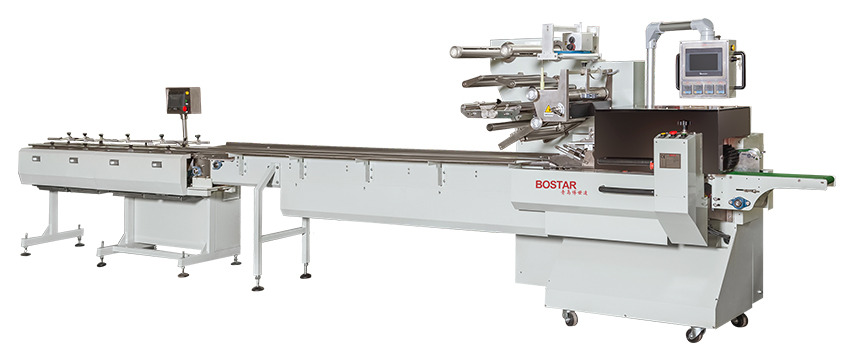
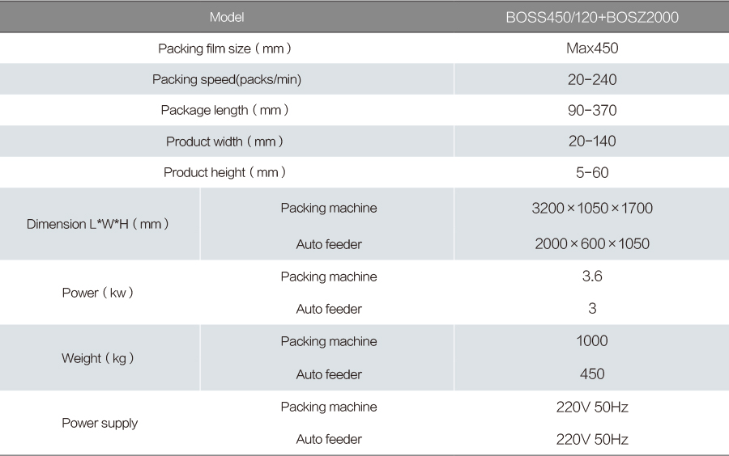

BOS Automatic Hamburger Packing Line
Arranges, slices and packs 6, 8 or 10 burger buns per bag.
View machine
4-stage feeder · Bakery · Burger buns
Four belts running at different speeds arrange and meter products into the wrapper, built for high-speed lines packing one or two items per bag.
Configured to your product. Film, infeed and pack count are confirmed before the order.
Built-in details
Specifications

Open the full-size tableDimensions above are for the standard infeed length. Film width, bag former, conveyor and pack count are configured for your product.
Maximum packaging range shown; final parameters are confirmed in the contract.
Applications
The same platform is configured differently for each product. These are the applications this model is most often specified for.
More machines
Next step
Send your product size, film and target speed. We will come back with a machine configuration and a quote.